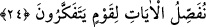

DÜNYA HAYATI
24. Dünya hayatının durumu, gökten indirdiğimiz bir su gibidir ki, insanların ve
hayvanların yiyeceklerinden olan yeryüzü bitkileri o su sayesinde gürleşip birbirine
girer. Nihayet yeryüzü ziynetini takınıp, (rengârenk) süslendiği ve sahipleri de
onun üzerinde kudret sahibi olduklarını sandıkları bir sırada, bir gece veya gündüz
ona emrimiz (âfetimiz) gelir de onu sanki dün yerinde yokmuş gibi kökünden
koparılarak biçilmiş bir hale getiririz. İşte iyi düşünen bir toplum için âyetlerimizi
böyle geniş geniş açıklarız.
“Dünya hayatının” şaşılacak “durumu, gökten indirdiğimiz bir su gibidir”
Dünyanın bu şaşılası durumu, diğer tuhaf şeyler hakkındaki örneklere benzetilerek
“mesel” diye adlandırılmıştır.
“ki, insanların” yediği tahıl ve baklagiller “ve hayvanların yiyeceklerinden olan”
otlardan ibaret bulunan “yeryüzü bitkileri o su sayesinde” yağmur sebebiyle “gürleşip
birbirine girer.” İyice birbiri içine girer ve kesifleşir. “Nihayet yeryüzü ziynetini”
süsünü ve güzelliğini “takınıp” tıpkı rengarenk elbiseler ve ziynetler takınıp süslenen
bir gelin gibi çeşitli renk ve şekillerdeki bitki türleri ile “süslendiği” bir sırada
ifâdesinde kapalı istiâre vardır. Çünkü yer geline benzetilmiş ve geline uygun düşen
ziynet takınma vasfı, ona izafe edilmiştir. “Süslendi”, lafzı ise bu benzetmeyi iyice
pekiştirmektedir.
“ve” o yerin “sahipleri de onun üzerinde” yani onun ürününü devşirip sapını
samanını ayıklamaya “kudret sahibi olduklarını sandıkları bir sırada, bir gece veya
gündüz ona emrimiz (âfetimiz) gelir de onu” yani onun bitki örtüsünü “sanki dün”
“yerinde yokmuş” bitkisiyle süslenmemiş, önceden hiç olmamış “gibi kökünden
koparılarak biçilmiş bir hale getiririz.”
Buradaki “dün” lafzı, yakın zaman için kullanılan bir mesel olup hemen o günden
önceki gün demek değildir.
“İşte” yeryüzündeki bu olayların böylece tekrarlanıp durması üzerinde “iyi düşünen”
bunların mânâlarına; faydalanmaları için genişçe açıklamasının kendilerine tahsis